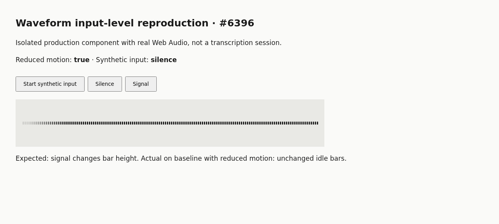
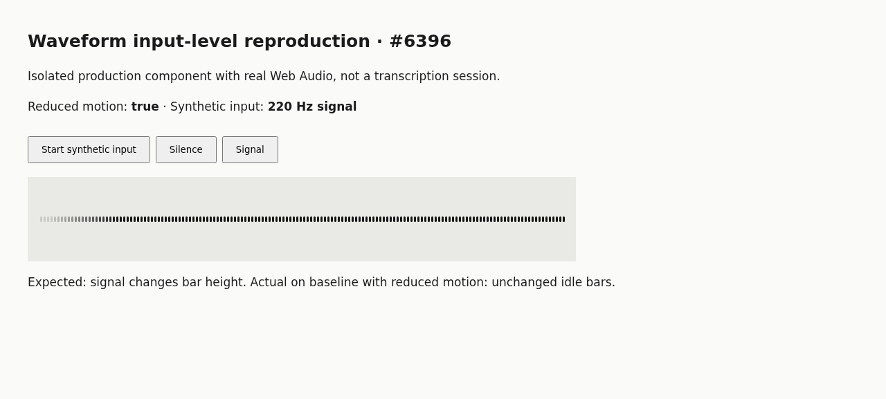

#6396 · Reduced-motion input-level feedback
Verdict: REPRODUCED · Root-cause confidence: high
1. TL;DR
The voice-recording waveform is an input-level display, but its reduced-motion branch does not read audio at all. On trusted main, an active audio stream and the browser's reduced-motion preference produce the same flat idle bars for silence and a real synthetic signal. A focused component regression fails only for reduced motion; the normal-motion control passes. I repeated both the test and the real-browser reproduction from a second clean checkout at the same commit. This verifies the shared renderer, not Android hardware or the full transcription service.
2. Claims vs findings
| Claim | Status | Evidence |
|---|---|---|
| Reduced motion removes live audio-level feedback. | Verified | Chromium canvas is byte-identical between silence and a 220 Hz signal; component regression fails. |
| Normal-motion input continues to show live levels. | Verified | The normal-motion regression control passes. |
| The early reduced-motion condition bypasses analysis. | Verified | The effect returns before constructing AudioContext and scheduling sampling. |
| Android e-ink hardware and the user's fork behave as described. | Unverified | No phone was used and no external code was fetched or executed. |
3. Environment
- Public repository get-bb/bb; trusted origin/main at
7125b90a6f7812e40d8e8509f53cecd301c84881. - Linux x86_64 (gVisor kernel 4.19.0), Node 22.19.0, pnpm 9.15.0, Chrome for Testing 156.0.8078.47.
- Primary and second clean detached checkouts were created with independent node_modules using frozen-lockfile installs.
- Component-only HTTP harnesses used loopback ports 18496 and 18497, respectively. No BB server, provider session, microphone permission, personal store, or real runtime data was used; no data directory was needed.
- Frozen install succeeded. Full Turbo build initially found unbuilt SDK exports; the repository's
build:typestask resolved them and the retry passed all 72 build tasks. - No repository dependency was added. Browser runtime and system prerequisites were provisioned only as verification tooling.
4. Minimal reproduction
- Clone the public repository, check out the recorded trusted commit, and install its existing dependencies:
git clone https://github.com/get-bb/bb.git bb-6396 cd bb-6396 git checkout --detach 7125b90a6f7812e40d8e8509f53cecd301c84881 pnpm install --frozen-lockfile --prefer-offline pnpm exec turbo run build:types --filter=@get-bb/plugin-sdk pnpm exec turbo run build
- Download the regression test to
apps/app/src/components/promptbox/WaveformVisualizer.test.tsx, then run:pnpm exec turbo run test --filter=@bb/app -- src/components/promptbox/WaveformVisualizer.test.tsx
- Expected: silence → signal → silence changes rendered bar heights under both preferences, without stopping the recording track. Actual on baseline:
FAIL WaveformVisualizer > shows changing input levels with reduced motion true without stopping the recording track AssertionError: expected 0 to be greater than 0 Test Files 1 failed (1) Tests 1 failed | 3 passed (4)
The zero is the number of redraws after supplying the signal: the reduced-motion branch schedules no audio sampling. Primary log · second-checkout log. - For real Web Audio and real canvas verification, download browser-harness.tsx to
apps/app/.slopcop-6396.tsxand index.html to a temporary harness directory. Build its existing-source imports:mkdir -p /tmp/bb-6396-harness cp /path/to/downloaded/index.html /tmp/bb-6396-harness/index.html pnpm exec esbuild apps/app/.slopcop-6396.tsx --bundle --format=esm --jsx=automatic --outfile=/tmp/bb-6396-harness/app.js python3 -m http.server 18496 --bind 127.0.0.1 --directory /tmp/bb-6396-harness
In Chrome, emulateprefers-reduced-motion: reduce, open that loopback address, click Start synthetic input, capture the canvas, click Signal, wait 400 ms, and comparecanvas.toDataURL(). Expected: different canvas pixels. Actual: identical pixels. The oscillator is connected to a MediaStream destination, not speakers. Browser result.


Complete focused reproduction test
// @vitest-environment jsdom
import { act, cleanup, render } from "@testing-library/react";
import { afterEach, describe, expect, it, vi } from "vitest";
import { WaveformVisualizer } from "./WaveformVisualizer";
afterEach(() => {
cleanup();
vi.restoreAllMocks();
vi.unstubAllGlobals();
});
function setupAudio(reducedMotion: boolean) {
vi.stubGlobal("matchMedia", (query: string) => ({
matches: reducedMotion && query === "(prefers-reduced-motion: reduce)",
media: query,
addEventListener: vi.fn(),
removeEventListener: vi.fn(),
}));
let sample = 128;
const analysisTrack = { stop: vi.fn() };
const recordingTrack = { clone: () => analysisTrack, stop: vi.fn() };
class TestMediaStream {
getAudioTracks() {
return [recordingTrack];
}
}
vi.stubGlobal("MediaStream", TestMediaStream);
vi.stubGlobal(
"AudioContext",
class {
state = "running";
resume = vi.fn().mockResolvedValue(undefined);
close = vi.fn().mockResolvedValue(undefined);
createMediaStreamSource() {
return { connect: vi.fn(), disconnect: vi.fn() };
}
createAnalyser() {
return {
fftSize: 1024,
getByteTimeDomainData: (data: Uint8Array) => data.fill(sample),
disconnect: vi.fn(),
};
}
},
);
const frames = new Map<number, FrameRequestCallback>();
let nextFrame = 0;
vi.stubGlobal("requestAnimationFrame", (callback: FrameRequestCallback) => {
frames.set(++nextFrame, callback);
return nextFrame;
});
vi.stubGlobal("cancelAnimationFrame", (frame: number) => frames.delete(frame));
const moveTo = vi.fn();
const lineTo = vi.fn();
const context = {
setTransform: vi.fn(),
clearRect: vi.fn(),
beginPath: vi.fn(),
moveTo,
lineTo,
stroke: vi.fn(),
};
vi.spyOn(HTMLCanvasElement.prototype, "getContext").mockReturnValue(
context as unknown as CanvasRenderingContext2D,
);
vi.spyOn(HTMLCanvasElement.prototype, "getBoundingClientRect").mockReturnValue(
new DOMRect(0, 0, 100, 40),
);
return {
stream: new MediaStream(),
recordingTrack,
analysisTrack,
frames,
drawSample(value: number) {
sample = value;
moveTo.mockClear();
lineTo.mockClear();
act(() => {
for (let iteration = 0; iteration < 2; iteration++) {
const pending = [...frames.values()];
frames.clear();
for (const callback of pending) callback(0);
}
});
return lineTo.mock.calls.map(([horizontal, bottom], index) => ({
horizontal,
height: bottom - moveTo.mock.calls[index][1],
}));
},
};
}
describe("WaveformVisualizer", () => {
it.each([false, true])(
"shows changing input levels with reduced motion %s without stopping the recording track",
(reducedMotion) => {
const audio = setupAudio(reducedMotion);
const view = render(<WaveformVisualizer active stream={audio.stream} />);
const quiet = audio.drawSample(128);
const loud = audio.drawSample(160);
expect(loud.length).toBeGreaterThan(0);
expect(loud[0].height).toBeGreaterThan(quiet[0].height);
const silent = audio.drawSample(128);
expect(silent[0].height).toBeLessThan(loud[0].height);
if (reducedMotion) {
expect(loud.every((bar) => bar.height === loud[0].height)).toBe(true);
expect(silent.every((bar) => bar.height === silent[0].height)).toBe(true);
expect(loud.map((bar) => bar.horizontal)).toEqual(
quiet.map((bar) => bar.horizontal),
);
} else {
expect(silent[1].height).toBe(loud[0].height);
}
view.unmount();
expect(audio.frames.size).toBe(0);
expect(audio.analysisTrack.stop).toHaveBeenCalledOnce();
expect(audio.recordingTrack.stop).not.toHaveBeenCalled();
},
);
it.each([false, true])("keeps inactive input static with reduced motion %s", (reducedMotion) => {
const audio = setupAudio(reducedMotion);
render(<WaveformVisualizer active={false} stream={audio.stream} />);
expect(audio.frames.size).toBe(0);
});
});
5. Root cause
WaveformVisualizer.tsx:97–114 makes canAnimate depend on !prefersReducedMotion. Its fallback fills bars with a constant idle amplitude, draws once, registers only a resize observer, and returns. The subsequent AudioContext / analyser / RMS sampling path is unreachable while reduced motion is enabled. That couples functional signal measurement to decorative scrolling. The controlling condition dates to commit 331cbc3489; it is still present on the recorded main commit.
The parent VoiceRecordingBar passes the recording stream and active state to this renderer. Existing parent tests mock the waveform, so they cannot detect this renderer-level failure.
6. Proposed fix
Keep sampling active audio under either preference. Preserve the existing scrolling history for normal motion; under reduced motion, draw current-level bars in fixed positions without scrolling history. Silence and missing/inactive input should retain their current semantics, and cleanup must stop only the cloned analysis track. This separates essential input feedback from spatial motion and requires no protocol, SDK, CLI, data, or dependency change. The attached regression checks live response in both modes, stationary reduced-motion bars, normal history, inactivity, and cloned-track cleanup.
7. Related issues
The reduced-motion runtime-spinner issue #3921 is classified Bug / Medium / Low / ui in repository metadata; that is a different indicator, not evidence that the recording renderer is fixed. No open pull request linking #6396 was found through issue timeline, PR search, or closing-issue metadata at investigation time.
8. Verification
The same agent repeated verification (not independent review) in a second clean temporary checkout named verify, detached at 7125b90a6f7812e40d8e8509f53cecd301c84881. Production source was unchanged in both checkouts; only the locally authored test/harness was added. After a separate frozen install, the same Turbo command again produced exactly one reduced-motion failure and three passing cases. A separate browser page served the second checkout's separately bundled component on port 18497; with reduced motion forced on it again returned {secondCheckout:true,reduced:true,unchanged:true} for silence versus signal. Second browser result. No report correction was needed.
Root-cause permalinks were checked against the recorded commit, and both screenshots were inspected. Real Android/e-ink rendering, microphone capture, and end-to-end transcript delivery were not exercised.
9. Appendix and trust boundary
All code executed came from trusted origin/main, existing verification tools, or locally authored harness/test changes. Issue prose was treated only as untrusted claims; no linked external fork, patch, or script was fetched or run. No workflow or subagent was started. Classification writes use SlopCop's supplied GitHub wrapper.
Commands also used for evidence: git fetch origin main, git diff --quiet against the recorded commit for the production component, git blame -L 95,115, GitHub issue-property/timeline reads and open-PR metadata search, and Browser Automation's explicit local-headless session with page.emulateMediaFeatures, page.click, and real canvas pixel comparison. The browser harness uses synthetic audio only.
AGENT GENERATED